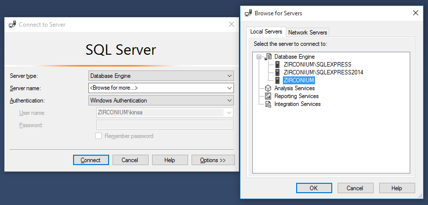
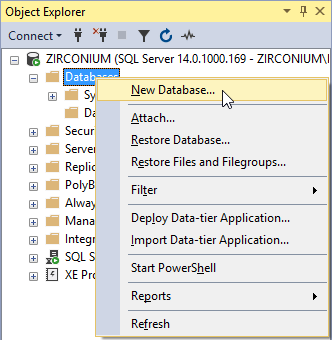
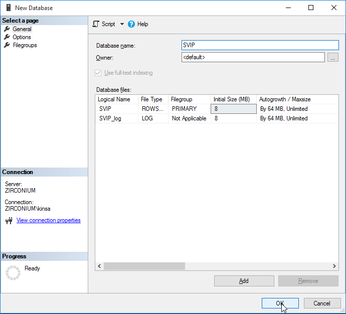
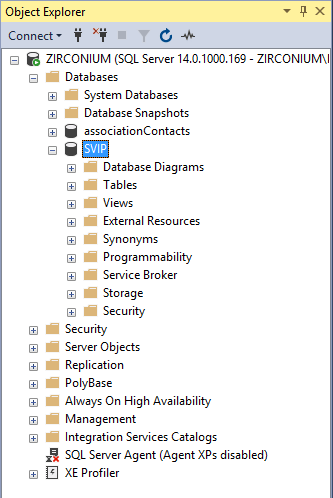
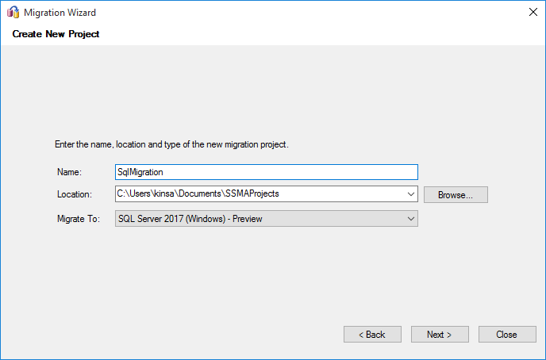
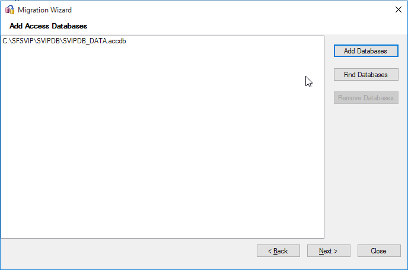
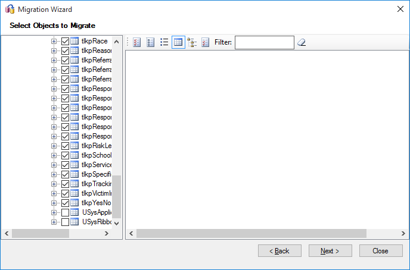
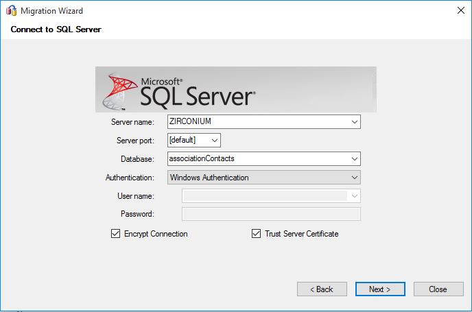
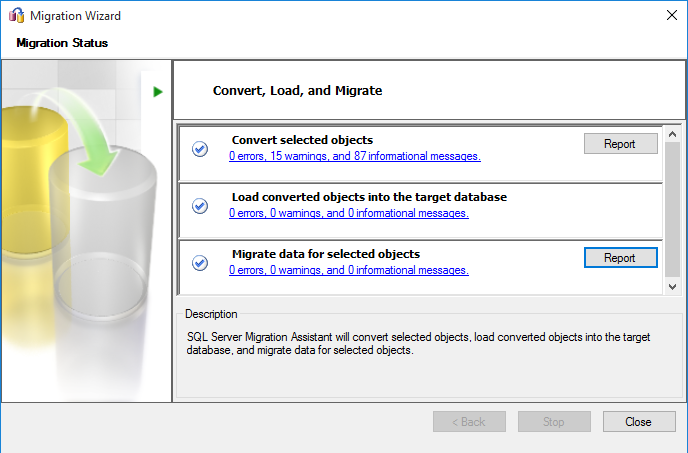
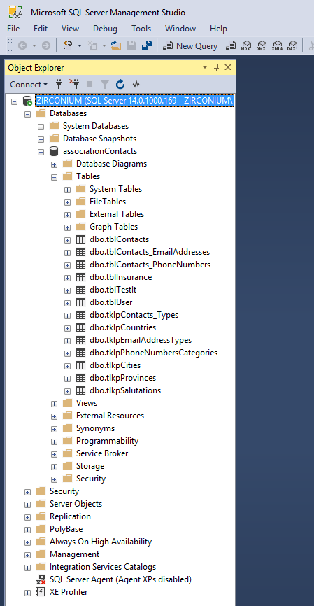

Upsize Microsoft Access Database
"Upsizing" is the term coined by Microsoft to describe the process of upgrading Microsoft Access Database to a Microsoft SQL Server
- It allows you to set Microsoft Access as a database front-end while running back-end which is served by a separate local or remote SQL Server, resulting in greater productivity and data volumes.
Setup
Download SQL Server 2017 for Windows
- Comes with many tools: Analysis Services, Integration Services, Configuration tools, Performance tools, import, export, etc.
Open SQL Server 2017 Configuration Manager to check that the current version of SQL Server is running
MSSQL14.MSSQLSERVER is a default instance of SQL Server 2017
Create SQL Server & Database
Install and start Microsoft SQL Server Management Studio 2017
Create a SQL server
- Select database engine as server type and browse for a server name 
Create a new database which you will migrate your Microsoft Access into

Input name for the database and select OK

You should see the created empty database in your SSMS Object Explorer

Migrate Microsoft Access
Install and start Microsoft SQL Server Migration Assistant 2017
You will be greeted by a Migration Assistant Wizard, which you can follow its prompts for your migration- select "next"
Create new migration, select migrate to SQL 2017

Click "Add Database" and select the appropriate Backend Data you would like to convert to SQL Server

Select the tables you want to migrate

Select the SQL Server created with Microsoft SQL Server Management Studio and select appropriate database

Wait for migration to complete, then check for errors

Check SQL database for migrated data, and you're done!
